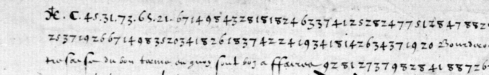
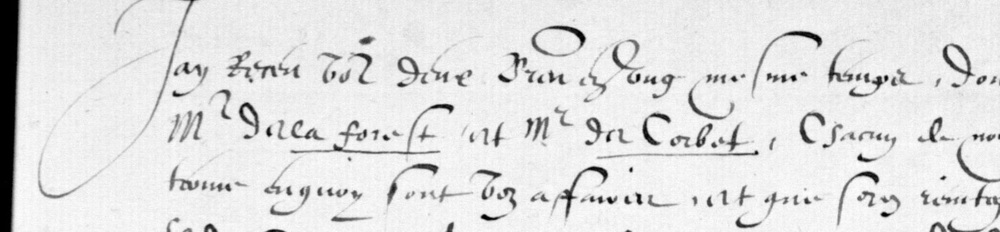
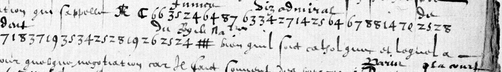

01 Three pages, two layers
Clairambault 357 is volume XLVII of the Bossuet-era collection of documents on Henri III’s reign (1583–1587). On Gallica it is btv1b9001053r. Folio 167r is canvas 331, the verso with the date and the sender’s signs is canvas 332, and folio 168r is canvas 333. The letter is not solid cipher. The writer drops into clear for a word or a phrase, and in clear he names Bordeaux and writes “tres fasché du bon terme en quoy sont voz affaires”.


02 The interlinear decipherment, and the key check
About thirty lines down f. 167r, a ✝ in the left margin marks the point where f. 168 stops. From there the decipherer worked between the lines. Checking the glosses against Tomokiyo’s table is a direct test of both:

| Figures | Interlinear gloss | Tomokiyo’s key gives |
|---|---|---|
| 74 24 34 28 29 72 | Guienne | g u i e n e |
| 26 43 28 82 | tres | t r e s |
| 18 37 19 35 34 25 28 19 26 | confident | c o n f i d e n t |
| 25 24 # | du Roy de Navarre | d u + a nomenclator sign |
| 35 24 64 87 | Fumé | f u m + 87, which is therefore e |
| 92 81 | et que | et que |
Above the cross, the key’s reading of the figures matches f. 168 in the runs tested. For example, 25 28 88 22 20 24 26 88 72 82 70 14 | 18 28 gives de r · autres pla|ce, where f. 168 has et autres places qui vous ont esté distraictes. The check adds a few things to the published table. 87 is e and 71 is a. 22, the commonest group, reads as a null in every word checked. 66 is a null, and so are the dotted groups 45.31.73.65.21. The double-barred # is the King of Navarre, glossed three times. D is England, and && is Mayenne, as Tomokiyo had it.
03 What the letter says
From f. 168, with uncertain words marked:
Jay receu voz deux lettres en ung mesme temps, dont jay faict communication a Mr de la Forest et Mr de Corbet … tres fasché du bon terme en quoy sont voz affaires … Indisposé d’une maladye qui m’a travaillé pres de deux moys … le commis a l’abbé de la Couronne … le voyage et negotiation qu’il entreprenoit estoit contraire a celle de l’an passé, seroit trouvé estrange non seullement de ses amys catholiques de France, mais des princes estrangers. Sur quoy il apportoit tout ce qu’il pouvoit de raisons … de la Royne mere … qui luy promettoit … de ne desirer faire la paix qu’a condition qu’il n’y auroit que la Religion catholique en France … que chascun avoit faict son affaire, et l’avoit on laissé seul abandonné. … Je croy que faisant [?] et autres places qui vous ont esté distraictes vous les pourrez avoir … la brouillerie du Roy de Navarre et de vous, que je tiens tres difficile pour la qualité que chascun de vous a prinse … qui passe avant. ✝
From the interlinear decipherment of the rest:
Je vous diray que j’ay esté pressé, et la seule bonne volonté d’un que vous congnoissez … qui s’appelle Fumé, visadmiral de Guienne, tres confident du Roy de Navarre, bien qu’il soit catholique et loyal a moy … pour quelque negotiation … Il est bien adverty. Il m’a plusieurs foys proposé cette reconciliation, qu’il dict luy estre aussy aysé et facille comme je la luy fais difficille et malaisée … si vous y voullez entendre … Il m’a quasy prié de la part du Roy de Navarre … la guerre … asseurance que la Royne d’Angleterre ne pourroit procurer … and on the verso … Jay envoyé a … Villeroy, qui me manda que pour contenter Monsieur du Mayne … conclure la paix, et si l’on donne quelque advantage aux Huguenotz …
The writer is a Catholic nobleman of the Angoumois or Saintonge. He mentions the abbey of La Couronne near Angoulême, Mrs de la Forest and de Corbet, and Bordeaux. He writes during the autumn of 1586, while Catherine de Médicis was negotiating with Henri of Navarre (the interviews of Saint-Brice took place that December). The addressee is set against Navarre as head of the other religious party, and Mayenne is named in the third person, so the addressee is most likely Henri, duke of Guise. That identification is an inference and not a reading.
04 What remains uncertain
- F. 168 is a fast secretary hand, and several phrases are read only loosely. Examples are the words after Charry, the passage on the abbot of La Couronne, and the last sentence. That sentence seems to pair protecteur with the Catholics, the reverse of what is expected, and needs the matching cipher words decoded.
- Only sample runs above the cross were decoded with the key against f. 168. All of them agreed, but the page has not been checked word by word.
- The verso glosses were read only where they are clear. A few proper names (“Cambaronne”?, “Coride”?) and the signs R, ⊖, Ω and ✝o are not settled.
- The sender’s signs at the foot of f. 167v are not identified, and neither is Fumé beyond his office.
05 Sources
- BnF, Clairambault 357, ff. 167–168: Gallica btv1b9001053r, views 331–333.
- S. Tomokiyo, “Anonymous Figure Cipher (1586)”, in “French Ciphers during the Reigns of Charles IX and Henry III”, cryptiana, with the reconstructed table.
The notes, the transcription and the crop tools are in the repository (clair357/). Page images are not committed.